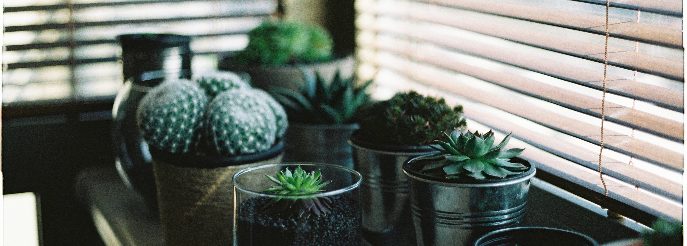

Each plant is unique and requires its own special care. We're here to help you to keep track of when your plants should be watered. If you're unsure of where to start, this guide will help you begin to tell exactly what your plants need.
Your typical houseplant is easy to take care of and low maintenance.
Houseplants should be watered about every 3 - 5 days. The amount that you'll water your houseplant depends on the size of the plant, but a good starting place for medium to small sized plants is 1/3 to 1/2 of a cup.
An overwatered houseplant will still have very damp soil between waterings. You may notice mold forming on the stem of the plant.
An underwatered house plant will have drooping leaves. If it is severely underwatered it may start to yellow. If leaves on your underwatered houseplant begin to die, you can prune them to allow the plant to focus its energy on the remaining healthy brush.
Succulents are desert plants. They are easy to overwater by accident.
Succulents evolved in an environment where it rains rarely. Similarly, you should only water your succulent every 2 to 3 weeks, when you've noticed that the soil has completely dried out.
An overwatered succulent will have plump, heavy leaves. Its soil will still be wet when you think you are ready to water again.
If your succulent is underwatered, it will shriek in a tone so high-pitched that the human ear cannot percieve it. If you suspect that your succulent is underwatered, simply place it near a dog and watch the dog for signs of distress.
Tropical plants are mysterious lifeforms used to wet, humid conditions. They require extra care to thrive.
Tropical plants divine their life essence from unique wells of chaos. You will know that it is time to water your tropical plant because you will feel an creeping urge to do so, like a friend whispering in your ear.
In the event that a tropical plant approaches the status of being overwatered, it will enter a state of distress. When in this state, the plant will teleport the excess moisture, seemingly at random. Look for small puddles in your living space to indicate that you need to slow down on the watering!
Similarly to an overwatered tropical plant, an underwatered tropical plant will enter a distressed state. However, when underwatered, the plant will absorb water from unlikely sources around its environment. To prevent any bodily fluids from being teleported to support the plant's life-systems, we reccommend always leaving a glass of water near any tropical plants that you have in your home.